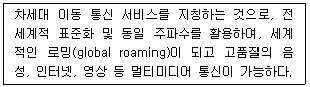
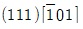
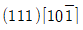
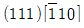
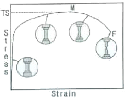

자기비파괴검사기사(구) (2009-07-26 기출문제)
1과목: 자기탐상시험원리
1. 1.6kA/m 에서 자분모양이 나타나는 A형 표준시험편을 시험체 표면에 놓고 전류 400A 를 흘렸더니 지시가 나타났다. 만일 시험체의 결함을 탐상하는데 3.2kA/m 의 자계가 필요하다면 몇 A 를 흘려주어야 하는가?
- 200
- 400
- 800
- 1600
(정답률: 알수없음)

2. 다음 중 자계 영역 내에서 자력에 약하게 작용하는 재료를 무엇이라 하는가?
- 상자성체
- 극자성체
- 강자성체
- 반자성체
(정답률: 알수없음)
3. 자분탐상시험의 자력선에 대한 설명으로 틀린 것은?
- 자력선은 항상 서로 교차한다.
- N극에서 나와서 S극으로 흐른다.
- 자력선의 밀도가 큰 곳은 자계가 세다.
- 자력선의 밀도는 그 점에서의 자계의 세기를 나타낸다.
(정답률: 알수없음)
4. 자분탐상시험의 탈자 방법에 대한 설명으로 틀린 것은?
- 관통형은 시험체를 코일 속을 지나 이동시킴으로서 코일의 자계로부터 거리를 멀리 하는 방식이다.
- 평면형은 시험체를 전자석이 만들어내는 자계의 상부중앙에 일정시간 유지시키는 방식이다.
- 극간형은 시험체를 전자석의 자극사이에 놓고 전자석의 전류를 감쇠시키는 방식이다.
- 직류식 탈자는 표피효과가 적기 때문에 시험체 직하(直下)의 곳까지 탈자가 가능하다.
(정답률: 알수없음)
5. 코일법을 적용할 때 강자성체에 작용하는 자계 강도가 코일이 만든 자계 강도보다 약하게 되는 가장 큰 이유는?
- 반자계 때문에
- 항자력 때문에
- 잔류자계 때문에
- 유효자계 때문에
(정답률: 알수없음)
6. 자분탐상시험의 건식법과 습식법의 장ㆍ단점을 설명한 것으로 틀린 것은?
- 건식법은 습식법보다 높은 온도에서 시험할 수 있다.
- 습식법은 건식법보다 미세결함의 검출이 용이하다.
- 건식법은 습식법보다 복잡한 형상의 시험체에 적합하다.
- 습식법은 건식법보다 표면이 거친 시험체에 덜 우수하다.
(정답률: 알수없음)
7. 다음 중 결함의 형상을 육안으로 판단할 수 있어 해석이 용이한 비파괴검사법만으로 조합된 것은?
- 방사선투과검사, 자분탐상검사
- 초음파탐상검사, 침투탐상검사
- 와전류탐상검사, 자분탐상검사
- 와전류탐상검사, 침투탐상검사
(정답률: 알수없음)
8. 다음 중 철판에서 자주 발견되는 라미네이션(lamination)결함의 검출에 가장 효과적인 비파괴검사법은?
- 자분탐상검사
- 방사선투과검사
- 초음파탐상검사
- 와전류탐상검사
(정답률: 알수없음)
9. 각종 비파괴검사 장치의 교정에 대한 설명 중 옳은 것은?
- 극간(Yoke)법에 의한 자분탐상장치는 시험 전, 후 인상력(Lifting power)을 확인하여야 한다.
- 감마선투과시험에 사용하는 선원의 크기는 시험 전, 후 꺼내서 직접 확인 및 교정하여야 한다.
- 초음파탐상장치의 빔 폭의 측정은 3개월마다 또는 3개월 미만의 경우 연속 사용 기간마다 교정하여야 한다.
- 침투탐상시험용 탐상제는 시험 전에 매번 성능 교정을 받아야 하며 검정기관의 인증을 실시하여야 한다.
(정답률: 알수없음)
10. 다음 방사선투과시험의 장점에 대한 설명 중 틀린 것은?
- 검사결과는 반영구적으로 기록 및 보관할 수 있다.
- 마이크로 기공 또는 마이크로 터짐의 결함 검출능력이 뛰어나다.
- 대부분의 재질에 적용할 수 있으며, 특히 내부결함 검출이 용이하다.
- 주변 재질과 비교하여 1% 이상의 방사선 흡수치를 나타내는 결함을 검출할 수 있다.
(정답률: 알수없음)
11. 다음 중 침투탐상시험과 비교하여 자분탐상시험의 장점으로 옳은 것은?
- 절연체인 재료도 탐상할 수 있다.
- 비철금속 재료도 탐상할 수 있다.
- 페인트 처리된 강 재료도 탐상할 수 있다.
- 표면이 복잡한 형상의 시험체도 쉽게 탐상할 수 있다.
(정답률: 알수없음)
12. 다음 중 압력변화측정시험에서 시험결과가 의심스러울 때 시험 데이터의 신뢰도를 증가시키기 위해 가장 효율적으로 조치할 수 있는 첫 단계 방법으로 옳은 것은?
- 시험기간을 연장한다.
- 시험을 중단하고 장치를 교정한다.
- 시험을 중단하고 정확도가 높은 시험장치로 교체한다.
- 모든 시험조건과 시험장치를 교정한 다음 재시험을 실시한다.
(정답률: 알수없음)
13. 다음 중 와전류탐상시험을 할 수 없는 시험체는?
- 강선
- 황동판
- 알루미늄판
- 베크리이트 환봉
(정답률: 알수없음)
14. 시험체의 양쪽에 접근이 가능해야 적용할 수 있는 비파괴 시험법은?
- 방사선투과시험
- 초음파탐상시험
- 자분탐상시험
- 와전류탐상시험
(정답률: 알수없음)
15. 다음 중 자속밀도에 대한 설명으로 옳은 것은?
- 단위 면적 S 에 ø개의 자속 인 S/ø로 나타낸다.
- 자계의 세기 H를 투자율 μ로 나누어준 H/μ를 말한다.
- SI 단위로는 T(tesla)를, MKS 단위로는 Wb/m2로 나타낸다.
- 비자성체인 재료의 경우 자속밀도는 약 2000H/m 정도이다.
(정답률: 알수없음)
16. 보수검사를 와전류탐상시험으로 실시한 경우를 설명한 것 중 옳은 것은?
- 전열관이나 열교환기 배관 등은 프로브 코일로 검사하고, 항공기 부품 표면은 관통코일로 검사했다.
- 열교환기나 복수기 등의 검사에 관과 구멍의 안쪽에 내삽코일을 넣어 탐상했다.
- 열교환기 배관의 검사에서 배관 속에 프로브 코일을 넣어 관의 결함과 두께 감소를 검사했다.
- 원자력발전설비 대형 전열관의 검사에서 방사선피폭이 많기 때문에 관통코일 장치를 이용하여 자동화 검사를 했다.
(정답률: 알수없음)
17. 다음 중 다른 누설검사와 비교하였을 때 기포누설검사의 가장 큰 장점은?
- 누설위치의 판별이 매우 빠르다.
- 누설량을 정량적으로 측정할 수 있다.
- 시험체 표면의 온도에 크게 영향을 받지 않는다.
- 시험용액의 점도(viscosity)에 영향을 받지 않는다.
(정답률: 알수없음)
18. 외경 30mm, 두께 2.5mm의 튜브를 직경 20mm인 코일이 감겨있는 내삽형 탐촉자로 와전류탐상시험할 때 충전율(fill factor)은 얼마인가?
- 0.44
- 0.64
- 0.67
- 0.80
(정답률: 알수없음)
19. 다른 침투탐상검사와 비교하여 수세성 형광침투탐상시험의 특징이 아닌 것은?
- 표면조도가 6s 이하의 매끄러운 표면을 갖는 시험체에 적용한다.
- Key 또는 나사부와 같은 형상이 복잡한 시험체를 탐상할 수 있다.
- 넓은 면적의 시험체를 한번의 조작으로 탐상할 수 있다.
- 고감도의 수세성 형광침투액을 사용하면 얕고 미세한 결함도 탐상이 가능하다.
(정답률: 알수없음)
20. 자분탐상시험과 비교할 때 침투탐상시험을 우선적으로 적용할 수 있는 가장 큰 이유는?
- 시험체의 재질에 대한 제한이 적기 때문에
- 미세한 균열의 검출감도가 우수하기 때문에
- 열처리 직후의 검사에서 신뢰성이 높기 때문에
- 표면 전처리의 정도가 높지 않아도 되기 때문에
(정답률: 알수없음)
2과목: 자기탐상검사
21. 다음 중 누설자속 탐상검사를 할 때 누설자속을 검출하는 센서로 쓸 수 없는 것은?
- 홀 소자
- 압전 소자
- 자기 다이오드
- 자기 저항효과 소자
(정답률: 알수없음)
22. 어떤 도체에 솔레노이드가 1m당 4회 감겨 있고 100A의 전류가 흐른다면 자계의 세기는 몇 A/m인가?
- 25
- 160
- 225
- 400
(정답률: 알수없음)
23. 비형광자분과 비교한 습식-형광자분의 장점에 대한 설명으로 틀린 것은?
- 열화되기 쉽다.
- 대비(contrast)가 좋다.
- 미세결함 검출에 적합하다.
- 저농도로 사용이 가능하다.
(정답률: 알수없음)
24. 다음 중 어떤 시험체에 대한 자분탐상시험 절차서를 작성할 때 자분모양의 기록 방법으로 적합하지 않은 것은?
- 전사
- 스케치
- 사진 촬영
- 모형으로 제작
(정답률: 알수없음)
25. 코일법으로 자화할 때 고탄소강과 저탄소강의 시험체에 적용하는 전류 크기를 비교한 것으로 옳은 것은?
- 고탄소강 시험체는 저탄소강 시험체보다 적은 전류를 적용한다.
- 고탄소강 시험체는 저탄소강 시험체보다 많은 전류를 적용한다.
- 고탄소강 시험체는 저탄소강 시험체와 같은 전류를 적용한다.
- 고탄소강 시험체와 저탄소강 시험체의 전류 비교는 의미가 없다.
(정답률: 알수없음)
26. 다음 중 시험품의 자분탐상검사에서 어떤 것을 불합격으로 판정하여야 하는가?
- 유사지시
- 결함지시
- 의사지시
- 비관련지시
(정답률: 알수없음)
27. 두꺼운 후판을 탐상하기 위한 자화방법만의 조합으로 옳은 것은?
- 극간법-축통전법
- 프로드법-직각통전법
- 극간법-프로드법
- 프로드법-전류관통법
(정답률: 알수없음)
28. 자분탐상검사에서 직육면체 모양의 시험체 모서리 부근에 무관련지시가 고르게 나타났다면 그 이유로 가장 적합한 것은?
- 시험체의 금속조식 차이 때문이다.
- 모서리 보근의 표면이 깨끗하기 때문이다.
- 모서리 부근에서 자속밀도가 희박하기 때문이다.
- 자력선은 시험체의 가장 얇은 부분으로 들어가고 나오는 경향이 있기 때문이다.
(정답률: 알수없음)
29. 다음 중 석유탱크와 같은 대형 시험체의 용접부에 대한 자분탐상검사는 어떤 방법이 가장 적합한가?
- 코일법
- 전류관통법
- 극간법
- 자속관통법
(정답률: 알수없음)
30. 다음 중 누설자속의 발생에 영향을 주는 요인과 거리가 먼 것은?
- 자계의 세기
- 자계의 방향
- 결함의 위치
- 형광, 비형광 등 자분의 종류
(정답률: 알수없음)
31. 다음 중 전류관통법에 대한 설명으로 옳은 것은?
- 자속밀도가 가장 높은 곳은 시험체 내부 표면이다.
- 전류에 직각인 원주방향 결함을 찾는데 효과적이다.
- 자화전류는 시험체의 외경에는 영향을 받지 않는다.
- 시험체에 직접 전류를 통전하므로 검사 표면이 손상될 우려가 있다.
(정답률: 알수없음)
32. 자분탐상검사하기에 부적합한 다음 재료 중 상자성체에 해당하는 것은?
- Zn
- Cu
- Au
- Al
(정답률: 알수없음)
33. 시험체의 길이와 코일의 크기는 선형자화에서 중요한 인자이다. 코일법으로 시험체를 자화시켰을 때 1회에 효과적인 검사가 가능한 자력선이 미치는 코일 양쪽의 시험체 유효 범위로 옳은 것은?
- 6~9인치
- 10~12인치
- 13~15인치
- 16~19인치
(정답률: 알수없음)
34. 자분탐상검사 장비를 구성하기 위해서는 검사목적에 따라 여러 사항을 고려하여 결정하여야 한다. 다음 중 고려할 사항의 설명으로 틀린 것은?
- 건식법인 경우 시험면을 건조시킨 후 수행하여야 한다.
- 분산매로 물을 사용한 경우 분상용 첨가제를 첨가하면 보다 균일하게 자분을 분산시킬수 있다.
- 분산매로 기름을 사용한경우 건조가 빠르기 때문에 보다 쉽게 수행할 수 있다.
- 형광습식법인 경우 주변에 검은 종이를 사용하면 보다 효과적으로 지시를 판별할 수 있다.
(정답률: 알수없음)
35. 자분탐상검사시 용접부의 표면에서 1/2인치 내부인 깊은 곳에 있는 결함의 검출에 대한 설명으로 가장 옳은 것은?
- 표면균열의 검출 방법과 같다.
- 결함 폭을 짐작할 수 있으면 간단히 검출된다.
- 표면 결함의 검출과 다르게 많은 어려움이 있다.
- 결함이 길고 용접 중심에 있으면 쉽게 검출된다.
(정답률: 알수없음)
36. 탈자할 때 시험체에 걸어주는 반전 자계의 방향에 대하여 효과적인 방법의 설명으로 옳은 것은?
- 코일법으로 자화했다면 축통전법으로 탈자를 한다.
- 축통전법으로 자화했다면 코일법으로 탈자를 한다.
- 자화할 때 걸어준 자계 방향과 같은 방향으로 탈자를 한다.
- 자화할 때 걸어준 자계 방향과 무관하게 지그재그 방향으로 탈자를 한다.
(정답률: 알수없음)
37. 자분탐상검사에 사용되는 습식자분은 일반적으로 건식자분에 비해 입도가 작은 것을 사용하는데 이에 대한 설명으로 틀린 것은?
- 일반적으로 사용되는 습식자분의 크기는 35~60μm 이다.
- 적은 누설자계의 경우에도 이동할 수 있도록 하기 위함이다.
- 검사액의 자분이 쉽게 가라앉지 않도록 하기 위함이다.
- 검사액 속에서 유동성이 좋도록 하기 위함이다.
(정답률: 알수없음)
38. 다음 중 자분탐상검사에 사용되는 자분 검사액에 대한 설명으로 틀린 것은?
- 자분이 균일하게 분산되어야 한다.
- 적정량의 자분이 포함되어야 한다.
- 시험체에 대하여 적심성이 좋아야 한다.
- 농도는 형광자분일 때 일반적으로 20~35g/L 이다.
(정답률: 알수없음)
39. 다음 중 프로드법을 이용하여 자화시킬 때 결함의 자분모양이 가장 잘 나타나는 경우는?
- 프로드 전극에 매우 근접해 있을 때
- 프로드 전극 사이의 자력선과 수직일 때
- 2개의 프로드 전극과 수직한 방향일 때
- 결함의 방향과 관계없이 자계 범위 내에 존재할 때
(정답률: 알수없음)
40. 자분탐상검사와 관련된 다음 설명 중 옳은 것은?
- 자외선 조사등의 파장은 약 265nm 이다.
- 자계의 세기를 나타내는 전류계는 파고치(波高値)로 표시된다.
- 영구자석은 영구적으로 자속이 변화하지 않으므로 별도의 관리가 필요하지 않다.
- 교류자화는 표면결함의 검출을 곤란하며 표면 하(下)의 경함은 잘 검출된다.
(정답률: 알수없음)
3과목: 자기탐상관련규격및컴퓨터활용
41. 철강 재료의 자분탐상 시험방법 및 자분모양의 분류(KS D 0213)에 따른 시험방법의 분류시 자분의 분산매에 따른 분류의 조합으로 옳은 것은?
- 건식법과 습식법
- 연속법과 잔류법
- 코일법과 극간법
- 형광자분과 비형광자분
(정답률: 알수없음)
42. 보일러 및 압력용기에 대한 자분탐상검사(ASME Sec.V.Art.7)에서 직류 또는 영구자석 요크는 사용 최대 극간 거리에서 몇 kg 이상의 인상(Lifting power)을 가져야 하는가?
- 4
- 4.5
- 14.5
- 18
(정답률: 알수없음)
43. 보일러 및 압력용기에 대한 자분탐상검사(ASME Sec.V.Art.25 SE-709)에서 비형광자분 사용시 시험체 표면의 밝기는 어떻게 규정하고 있는가?
- 500lx 이하
- 750lx 이하
- 1000lx 이상
- 5000lx 이상
(정답률: 알수없음)
44. 보일러 및 압력용기에 대한 자분탐상검사(ASME Sec.V.Art.7)에서 파이형 자장지시계의 용도를 가장 정확하게 설명한 것은?
- 전류치 측정
- 결함위치 측정
- 결함의 깊이 측정
- 자계 방향의 적합성 측정
(정답률: 알수없음)
45. 철강 재료의 자분탐상 시험방법 및 자분모양의 분류(KS D 0213)에서 시험방법 등을 지시하는 규격 또는 제품이나 전표등에 시험조건을 기재하는 기호나 부호 등의 내용에 대하여 다음 중 옳은 설명은?
- 자화전류치는 전력단위로 표시한다.
- 전류관통법은 M 의부호로 표시한다.
- 탈자필의 기호는 Ⓓ 의 부호를 붙인다.
- 충격전류는 C의 부호를 붙인다.
(정답률: 알수없음)
46. 철강 재료의 자분탐상 시험방법 및 자분모양의 분류(KS D 0213)에서 충격전류를 사용하여 잔류법으로 검사할 경우 1회 통전시간의 기준으로 옳은 것은?
- 1/120초 미만
- 1/120초 이상
- 1/4초 이상
- 1초 이상
(정답률: 알수없음)
47. 보일러 및 압력용기에 대한 자분탐상검사(ASME Sec.V.Art.7)에 따라 프로드법으로 검사를 실시할 때, 전극 간격은 최소 몇 mm 이상이어야 검출감도에 알맞는 결과를 얻을 수 있는가?
- 75mm(3인치)
- 100mm(4인치)
- 200mm(8인치)
- 300mm(12인치)
(정답률: 알수없음)
48. 보일러 및 압력용기에 대한 자분탐상검사(ASME Sec.V.Art.7)에서 다방향자화법의 자계의 적정성을 확인하는데 적합한 것은?
- 홀소자
- 가우스미터
- 자계 탐촉자
- 인공결함시험편
(정답률: 알수없음)
49. 철강 재료의 자분탐상 시험방법 및 자분모양의 분류(KS D 0213)에서 규정한 자화에 대한 설명으로 틀린 것은?
- 교류 및 충격전류를 써서 자화시키는 경우 원칙적으로 표면 흠의 검출에 한한다.
- 교류를 써서 자화시키는 경우는 원칙적으로 연속법에 한한다.
- 맥류 및 직류를 써서 자화하는 경우는 표면 흠 및 표면 근방의 내부의 흠을 검출할 수 있다.
- 직류는 표피효과의 영향에 따라 표면 아래의 자화는 교류에 비하여 약하다.
(정답률: 알수없음)
50. 보일러 및 압력용기에 대한 자분탐상검사(ASME Sec.V.Art.25 SE-709)의 탈자에 대한 설명 중 틀린 것은?
- 완벽한 탈자가 요구되면 원형자화를 시킨 후 선형자화를 시킨다.
- 잔류자기가 계측장치에 영향을 줄 경우는 탈자가 필요하다.
- 잔류자기가 이후의 기계가공에 영향을 줄 때는 탈자가 필요하다.
- 검사 후 100℃ 이하로 열처리할 부품인 경우 탈자를 하지 않는다.
(정답률: 알수없음)
51. 철강 재료의 자분탐상 시험방법 및 자분모양의 분류(KS D 0213)에서 시험기록의 기호가 EA~2000라고 표시되었을때 “~”의 의미로 옳은 것은?
- 직류
- 교류
- 표면 거칠기
- 탈자필 기호
(정답률: 알수없음)
52. 철강 재료의 자분탐상 시험방법 및 자분모양의 분류(KS D 0213)를 적용하여 전류관통법으로 여러 개의 시험체를 동시에 시험할 때 고려하여야 할 사항과 거리가 먼 것은?
- 자계강도는 도체 중심으로부터의 거리를 고려하여야 한다.
- 코일의 지름과 길이의 관계를 고려하여야 한다.
- 자기펜 자국이 생기는지의 여부를 고려하여야 한다.
- 자계강도는 도체 중심에서의 반지름에 반비례 관계를 고려하여야 한다.
(정답률: 알수없음)
53. 보일러 및 압력용기에 대한 자분탐상검사(ASME Sec.V.Art.7)에 따라 전류관통법으로 실린더형 제품의 구멍에 하나의 케이블을 관통하여 6000A 전류에서 적정한 자화강도를 얻었다면 3개의 관통 케이블을 사용하면 몇 A의 자화전류가 필요하겠는가?
- 2000
- 6000
- 9000
- 18000
(정답률: 알수없음)
54. 보일러 및 압력용기에 대한 자분탐상검사(ASME Sec.V.Art.25 SE-709)에서 습식 자분검사액은 주기적으로 침전량을 측정하여 규정농도를 유지하고 있는지 점검하여야 한다. 권고하고 있는 측정 주기로 옳은 것은?
- 8시간
- 24시간
- 1주일
- 1개월
(정답률: 알수없음)
55. 압력용기에 대한 자분탐상시험의 합격기준(ASME Sec.VⅢ.Dic.1)에 따라 검출된 자분지시를 평가할 때 다음 중 옳은 내용은?
- 크기가 1mm인 원형지시 4개가 1mm 간격으로 거의 일직선상에서 검출되어 선형지시로 평가하였다.
- 크기가 2mm 인 원형지시 3개가 1mm 간격으로 거의 일직선상에서 검출되어 불합격으로 평가하였다.
- 크기가 2mm 인 선형지시가 독립적으로 검출되어 불합격으로 평가하였다.
- 크기가 2mm 인 원형지시와 2mm 인 원형지시가 1mm 간격으로 검출되어 불합격으로 평가하였다.
(정답률: 알수없음)
56. 주기억장치와 중앙처리장치의 처리속도를 맞추기 위하여 사용하는 것은?
- 가상기억장치
- 캐시기억장치
- 다운기억장치
- 보조기억장치
(정답률: 알수없음)
57. 정보보호 기술 중 시스템의 안전성과 신뢰성을 확보하기 위한 기술로 전자서명 기술이 있다. 다음 중 전자서명 기술에 대한 설명으로 옳은 것은?
- 전자 서명 기술은 대칭키 암호 시스템(PKI)을 기본 암호 구조로 사용하고 있다.
- PKI는 정자 상거래에서만 사용될 뿐 전자우편, FTP.Telnet 에서는 사용할 수 없다.
- PKI는 인증서의 발급, 사용 및 취소에 관련된 서비스를 제공하는데, 특히 등록기관(RA)은 사용자가 공개키 인증서와 CRL을 저장하고 열람할 수 있는 전자 레포지토리를 제공한다.
- PKI 서비스 중 인증기관(CA)은 사용자에게 인증서를 발급하거나 취소하는 서비스를 제공한다.
(정답률: 알수없음)
58. 다음이 설명하고 있는 것은?

- 셀룰러(cellular)방식
- IMT-2000
- ISDN
- 주파수 분할 다중 접속(FDMA)
(정답률: 알수없음)
59. 다음 중 정보를 검색하는 엔진에 속하지 않는 것은?
- 라이코스
- 네이버
- 엠파스
- 네스케이프
(정답률: 알수없음)
60. 운영체제의 제어프로그램 중 다양한 종류의 데이터 포맷과 파일을 체계적으로 관리해 주는 프로그램은?
- 감시 프로그램(Supervisor Program)
- 작업관리 프로그램(Job Management Program)
- 문제처리 프로그램(Problem Processing Program)
- 데이터관리 프로그램(Data Management Program)
(정답률: 알수없음)
4과목: 금속재료학
61. 섬유재로 모재금속을 강화시킨 섬유강화형 복합재료(FRM)의 특징으로 옳은 것은?
- 비강도, 비강성이 높다.
- 열적안정성이 낮다.
- 2차 성형성, 접합성이 없다.
- 섬유축방향과 직각방향의 강도가 작다.
(정답률: 알수없음)
62. 면심입방격자의 슬립계 조합이 잘못된 것은?


- (111)[110]

(정답률: 알수없음)
63. 금속의 방식법 중에서 알루미늄을 확산시켜 피막을 형성 시키는 것은?
- 크로마이징(Chromizing)
- 칼로라이징(Calorizing)
- 파커라이징(Parkerizing
- 세라다이징(Sheradizing)
(정답률: 알수없음)
64. Mg합금 중 엘렉트론(elektron)합금에 대한 설명으로 옳은 것은?
- 가공용 마그네슘합금으로 Mg-Al 합금에 Ni과 As을 첨가한 합금이다.
- 가공용 마그네슘합금으로 Mg-Zr-Cu 합금에 B을 첨가한 합금이다.
- 주조용 마그네슘합금으로 Mg-Al 합금에 소량의 Zn과 Mn을 첨가한 합금이다.
- 주조용 마그네슘합금으로 Mg-Zr-Cu 합금에 Sn을 첨가한 합금이다.
(정답률: 알수없음)
65. 다이캐스팅용 Al합금의 첨가원소 중 용탕의 유동성 및 보급성을 좋게 하고 열간 취성을 감소시키는 원소는?
- S
- Cr
- Fe
- Si
(정답률: 알수없음)
66. 탄소강 중에 망간(Mn)의 영향으로 옳은 것은?
- 고온에서 결정립 성장을 돕는다.
- 강의 담금질 효과를 감소시켜 경화능이 저하된다.
- 강의 점성을 증가시키고 고온 가공성은 향상시키나 냉간가공성에는 불리하다.
- 강의 연신율을 증대시키고 강도, 경도, 인성을 감소 시킨다.
(정답률: 알수없음)
67. C와 Si의 함량에 의하여 주철을 분류한 조직도를 무엇이라 하는가?
- Cupola 조직도
- Bessemer 조직도
- Huntsman 조직도
- Maurer 조직도
(정답률: 알수없음)
68. 금속간 화합물에 대한 설명으로 틀린 것은?
- 일반적으로 AmBn 화학식으로 나타낸다.
- 고온에서 불안정하여 화학적으로 분해되기 쉽다.
- 변형이 어렵고 경하며, 일반적으로 복잡한 결정구조를 갖는다.
- A, B 두 금속이 간단한 원자비로 결합되어 본래의 물질과 같은 성질을 나타낸다.
(정답률: 알수없음)
69. 다음 원소 중에서 응고할 때 수축하지 않고 오히려 팽창하는 원소는?
- Bi
- Sn
- Al
- Cu
(정답률: 알수없음)
70. 금속초미립자의 특성에 대한 설명으로 옳은 것은?
- 융점이 금속덩어리보다 높다.
- 활성이 약하여 화학반응을 일으키지 않는다.
- Fe계 합금 초미립자는 금속덩어리보다 자성이 약하다.
- 저온에서 열저항이 매우 작아 열의 양도체이다.
(정답률: 알수없음)
71. 다음 중 Ni-Fe 합금에 대한 설명으로 틀린 것은?
- 10%Ni-Fe 합금을 Hydronalium 이라 하며, 연신성이 우수하고 비중이 작아 선박용 부품 등에 사용된다.
- 36%Ni-Fe 합금을 Invar 하고 하며, 상온부근에서 열팽창계수가 작다.
- 41~48%Ni-Fe 합금을 Platinite 라 하며, 우수한 고투자율성을 나타내어 자기헤드용으로 사용된다.
- 78.5%Ni-Fe 합금을 Permalloy 라 하며, 전자관, 전구 등에 사용된다.
(정답률: 알수없음)
72. α-황동을 냉간 가공하여 재결정 온도 이하의 낮은 온도로 풀림을 하면 가공 상태보다 더욱 경도가 증가되는 현상은?
- 경년 변화
- 석출 경화
- 고온 탈아연
- 저온 풀림 경화
(정답률: 알수없음)
73. 탄소강에서 담금질시 화학조성 중 마텐자이트로 변태를 시작하는 온도(Ms)에 가장 크게 영향을 미치는 것은?
- Mn
- Si
- C
- Cu
(정답률: 알수없음)
74. 다음 중 구조용강 및 기계구조용강에 대한 설명으로 틀린 것은?
- 쾌삭강이란 S, Ca, Pb 등을 첨가해서 쾌삭성을 향상시킨 강종이다.
- Cr-Mo 강은 Cr 강보다 담금질성이 향상되고 뜨임취성이 적은 강이다.
- 고망간강은 열전도성이 좋으며, 팽창계수도 작아 열변형을 일으키지 않는다.
- 보론강은 중탄소강에 보론을 0.003% 이하 첨가하면 경화능이 현저하게 향상된다.
(정답률: 알수없음)
75. 다음 중 냉간가공된 금속에 대한 설명으로 틀린 것은?
- 냉간가공으로 금속결정 내의 전위는 감소한다.
- 융점이 낮은 금속에서는 가공 후 가열하지 않고 실온에 방치만하여도 회복이 일어난다.
- 냉간가공된 금속을 어닐링하면 회복, 재결정, 결정립성장의 단계를 거친다.
- 냉간가공으로 변형된 금속을 가열하면 그 내부에 새로운 결정립의 핵이 생기고 이것이 성장하여 변형이 없는 결정립으로 치환되는 과정을 재결정이라고 한다.
(정답률: 알수없음)
76. 다음 중 청동계 합금에 대한 설명으로 옳은 것은?
- 합금 상태도 상에 α, β, γ, δ, η, ϵ 의 상이 존재한다.
- 주석의 최대고용한도는 520℃에서 약 5% 이다.
- 주석청동은 결정편석이 거의 없다.
- 768℃에서 포정반응에 의해 면심입방정이 생성된다.
(정답률: 알수없음)
77. 표준 인장시편에 표점거리를 표시한 다음 신장계를 사용하지 않고 인장시험을 하여 다음과 같은 인장곡선을 얻었을 때 이 곡석으로부터 구할 수 없는 것은?

- 항복강도
- 인장강도
- 연신율
- 충격값
(정답률: 알수없음)
78. 다음 중 금속의 조직량을 측정하는 방법이 아닌 것은?
- 면적 측정법
- 직선 측정법
- 점 측정법
- 절단 측정법
(정답률: 알수없음)
79. 다공질 금속의 원리적인 제조방법에 대한 설명으로 틀린 것은?
- 금속분말이나 단섬유를 소결하는 분말야금 방법
- 용탕금속 중에 발포제를 직접 첨가해서 발포시키는 방법
- 중력 상태에서 용융금속 내의 가스를 뽑아내는 방법
- 발포재료 등과 같이 밀도가 작은 재효를 금속과 복합화 시키는 방법
(정답률: 알수없음)
80. 0.2% 탄소강이 공석 변태 후 펄라이트(pearlite) 중의 페라이트(ferrite)양은 약 몇 % 인가? (단, α의 고용량은 0.025, 공석점은 0.80이다.)
- 20
- 50
- 70
- 90
(정답률: 알수없음)
5과목: 용접일반
81. 교류 아크 용접기의 수하특성 설명으로 올바른 것은?
- 아크 전압이 낮아지면 용접전류가 감소한다.
- 아크 전합이 높아지면 용접전류가 증가한다.
- 용접전류가 증가하면 아크 전압이 낮아진다.
- 아크 전압이 낮아지면 전류는 흐르지 않는다.
(정답률: 알수없음)
82. 용해 아세틸렌을 충전하였을 때 용기 전체의 무게가 62.5kgf이었는데, 다 쓰고 난 후 빈 용기를 달아 보았더니 58.5kgf이었다. 다 소비한 아세틸렌가스의 양은 몇 ℓ인가?
- 3580
- 3600
- 3620
- 3800
(정답률: 알수없음)
83. 아크 용접법 중 2개의 텅스텐 전극봉 사이에서 아크를 발생하는 아크열을 이용하여 용접하는 것은?
- 테르밋 용접
- 불활성 가스 금속 아크 용접
- 탄산가스 아크 용접
- 원자 수소 아크 용접
(정답률: 알수없음)
84. 용접시 피닝의 목적을 올바르게 설명한 것은?
- 슬랙을 제거하고 용접부의 겅도를 높인다.
- 소성변형을 주어 용접부의 인장 잔류 응력을 완화시킨다.
- 소성가공에 의한 용접부의 경도를 증가시킨다.
- 가공경화에 따른 용접부의 인성을 증가시킨다.
(정답률: 알수없음)
85. 용접 흡을 가공하고, 완전히 용입시키기 위하여 루트간격을 적당히 둔 연강판을 맞대기 용접을 할 때, 발생하는 회전 변형을 방지하는 대책으로 틀린 것은?
- 가접을 튼튼히 한다.
- 미리 수축을 예측하여 예측량 만큼 벌려 놓는다.
- 길이가 긴 경우에는 2명 이상 용접사가 이음의 길이를 정해 놓고 순차적으로 교대 용접한다.
- 후퇴법, 대칭법, 비석법(skip method) 등의 용착법을 이용한다.
(정답률: 알수없음)
86. 서브머지드 아크용접(잠호 용접)의 설명으로 틀린 것은?
- 아크 전압이 낮아지면 아크 길이가 길어지고 비드 폭이 넓어진다.
- 용접속도가 지나치게 빠르면 언더컷이 생겨 비드면이 거칠어진다.
- 전류를 크게 증가 시키면 와이어의 용융량과 용입이 크게 증가한다.
- 와이어 돌출길이를 길게 하면 와이어의 저항열이 많이 발생하여 와이어의 용융량이 증가한다.
(정답률: 알수없음)
87. 정격 2차전류가 300A인 교류아크 용접기에서 실제의 용접전류 200A로 4시간 동안 용접하였을 때의 용접기 허용 사용율은 얼마인가? (단, 정격사용율은 40%이다.)
- 60%
- 75%
- 90%
- 110%
(정답률: 알수없음)
88. 용접의 장ㆍ단점 설명으로 틀린 것은?
- 재료의 두께에 제한이 없다.
- 잔류 응력은 발생하나 재질의 변형은 없다.
- 기밀성, 수밀성, 유밀성이 우수하며 이음 효율이 높다.
- 소음이 적어 실내 작업에 지장이 적고 복잡한 구조물 제작이 쉽다.
(정답률: 알수없음)
89. 용해 아세틸렌 취급 시 주의사항으로 틀린 것은?
- 용기 저장시에는 반드시 세워두지 말고 눕힐 것
- 보관시 용기는 40℃ 이하를 유지하고 반드시 캠을 씌울 것
- 저장 장소는 통풍이 양호할 것
- 사용 후에는 반드시 약간의 잔압(0.1kgf/cm2)을 남겨둘 것
(정답률: 알수없음)
90. 피복 금속 아크 용접봉의 용융속도에 관한 설명으로 맞는 것은?
- 용융속도는 아크 전류에 반비례한다.
- 용융속도는 아크 전류에 비례한다.
- 용융속도는 아크 전류에 반비례한다.
- 용융속도는 아크 전압에 비례한다.
(정답률: 알수없음)
91. 맞대기 용접을 할 때 모재의 영향을 방지하기 위하여 홈 표면에 다른 종류의 금속을 표면 피복 용접하는 것을 의미하는 용접용어는?
- 버터링(buttering)
- 심 용접(seam welding)
- 앤드 탭(end tap)
- 덧살(flash)
(정답률: 알수없음)
92. 직류 아크 용접기를 사용하여 용접할 경우 용접봉을 음극(-)에, 모재를 양극(+)에 연결하는 극성은?
- 음극성
- 정극성
- 역극성
- 쌍극성
(정답률: 알수없음)
93. 인청동 모재의 TIG 용접에 관한 설명으로 틀린 것은?
- 직류 정극성을 주로 사용한다.
- 토륨 텅스텐 용접봉을 사용한다.
- 용접속도를 느리게 해야 한다.
- 보호가스로 아르곤 또는 아르곤 + 헬륨을 사용한다.
(정답률: 알수없음)
94. 가스용접에서 주철 용접시 용제로 가장 적합한 것은?
- 불화소다, 염화리듐
- 규산소다, 염화나트륨
- 불화소다, 규산소다
- 붕산, 붕사
(정답률: 알수없음)
95. 피복 배합제의 성질 중 탈산제로 사용하지 않는 것은?
- 탄산철
- 밍간철
- 규소철
- 티탄철
(정답률: 알수없음)
96. 아크용접(arc welding)에서 피복 아크 용접봉을 사용하는 이유로 가장 적합한 것은?
- 용접 전압을 떨어뜨린다.
- 용착금속의 성질을 양호하게 한다.
- 소비 전력을 적게 한다.
- 용접기의 수명을 길게 한다.
(정답률: 알수없음)
97. 용접기의 무부하전압 100V, 아크전압이 40V , 아크전류가 300A이고, 내부손실이 5kW이면 용접기의 효율과 역율은 약 얼마인가?
- 효율 70.6%, 열율 56.7%
- 효율 56.7%, 열율 70.6%
- 효율 53%, 열율 58.5%
- 효율 58.5%, 열율 53%
(정답률: 알수없음)
98. 특수용접으로 미세한 알루미늄 분말과 산화철의 혼합물을 도가니에 넣고 그 위에 과산화바륨, 마그네슘 등의 혼합 분말로 점화하면 강력한 발열반응으로 차축, 레일 등 맞대기용접으로 알맞은 것은?
- 테르밋 용접
- 전자 빔 용접
- 레이저 용접
- 일렉트로 슬래그 용접
(정답률: 알수없음)
99. 서브머지드 아크용접의 용제에 대한 설명으로 틀린 것은?
- 용제의 종류는 일반적으로 용융형 용제와 소결형 용제로 구분한다.
- 용제의 입도 표시에서 20× D는 20 메시(mesh)에서 아주 미세한 분말을 뜻한다.
- 용접이 끝나면 용융되지 않은 용제는 회수하여 새로운 용제를 보충하여 다시 사용하되 중요하지 않은 곳에 사용한다.
- 용제의 산포량은 가능한 한 많이 사용하는 것이 실드 효과가 좋아 결함을 방지할 수 있다.
(정답률: 알수없음)
100. 용접시 발생하는 변형을 방지하기 위한 대책으로 틀린 것은?
- 가접을 튼튼하게 하고 역변형을 준다.
- 맞대기 용접보다 필릿용접 이음을 먼저 용접한다.
- 지그를 활용하여 구속 용접을 한다.
- 비석법 등 적당한 용착법을 활용한다.
(정답률: 알수없음)
즉, 전류를 2배로 증가시켜야 하므로 400A 에서 800A 로 전류를 증가시켜야 한다. 따라서 정답은 "800" 이다.